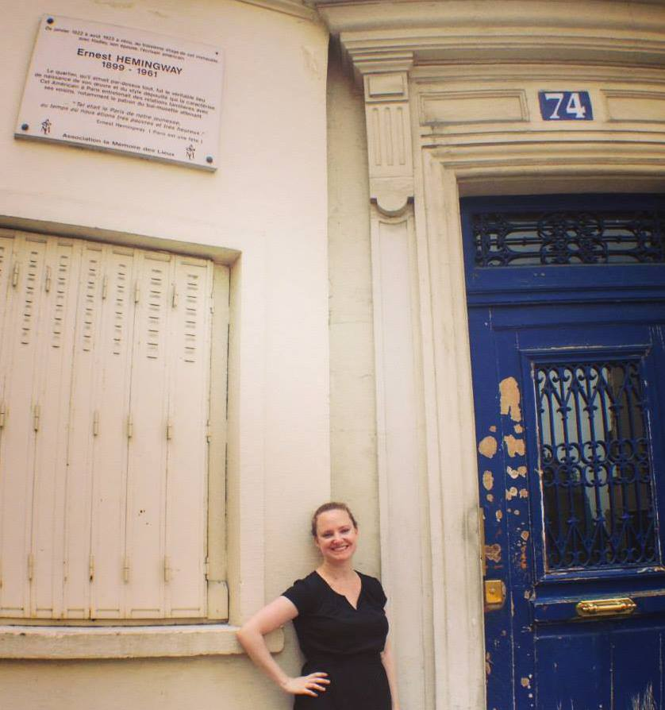

This is me in front of Ernest Hemingway's old apartment in Paris
Welcome to my portfolio page! Please check out the projects below and click through the nav about to learn more about me
These are links to the GitHub repository for each project listed.
With my partner, Jess, I created a website for a dream vacation to Thailand complete with a linked photo gallery page. For this page we used HTML, CSS, and bootstrap
This is a draft website for a cupcake shop! We created this using HTML and CSS
This is a sample website for an animal shelter that lists the animals available for adoption. This site was created using HTML and CSS.
This basic site shows the progress of a home decor project with HTML and CSS styling.
My partner and I wrote about our favorite bands. Both bands have broken up so instead of upcoming shows we listed related acts. This was the first project where we created a sidebar. We used HTML and CSS.
This is exactly what it sounds like, a pretend boring lecture page created with HTML only.
I enjoy hiking so I created a page about hiking using very basic HTML and CSS coding.
I created a website for a fake resort with HTML.
A very basic HTML and CSS page that contains a fake resume, one that combines my background with that of my class partner. We were still newbies to git and command line here and forgot to push the final version on Git. Oops!